왜 AI 캐릭터는 다 비슷해 보일까요?
화자는 그림을 하나도 못 그리는 게임 개발자예요. 영상에 나오는 캐릭터는 전부 AI로 만들었어요. 게임 폴더에서 가장 오래된 그림은 10월 13일의 토끼예요. 파일 이름 dream-memory-v01이 화면 왼쪽에 보여요.
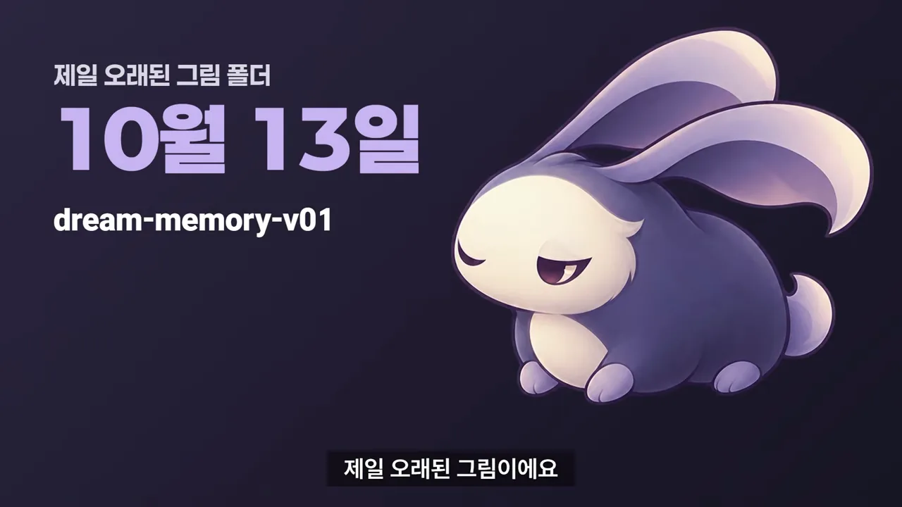
사슴 하나만 해도 '뿔을 파랗게, 빛나게, 귀를 작게'처럼 고쳐 가며 뽑은 파일이 줄줄이 있어요. 원하는 쪽으로 계속 고쳐 가며 뽑는 방식은 지금도 같아요. 그런데 이렇게 뽑은 그림을 한자리에 모으자 이상한 점이 보였어요. 아래 여덟 마리는 한 장씩 보면 예쁜데, 둥근 몸에 작은 얼굴, 비슷한 눈매까지 다 닮았어요.
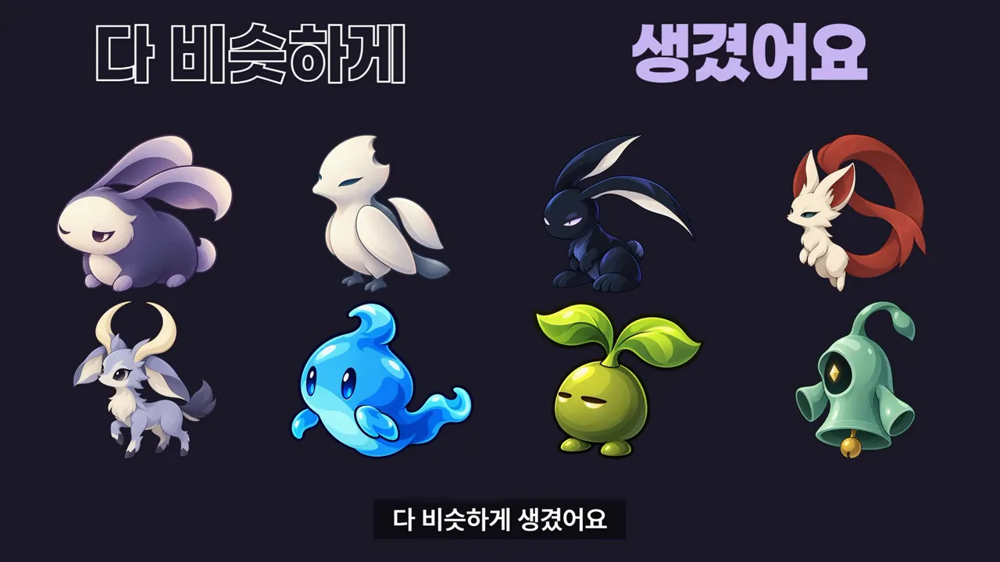
색을 빼고 회색으로 보면 더 분명해요. 화자는 이걸 '예쁜데 어디서 본 것 같은 느낌'이라고 불러요. AI로 캐릭터를 뽑아 본 사람이라면 익숙한 느낌이에요.
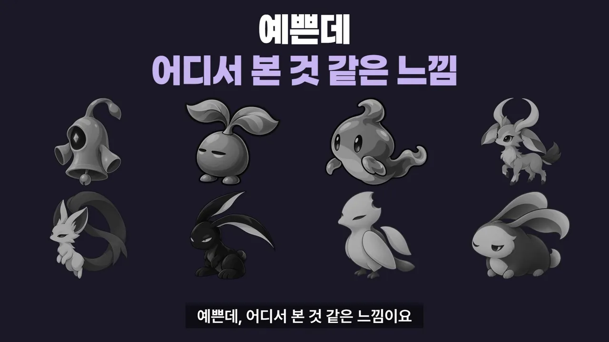
더 큰 문제는 왜 별로인지 말을 못 했다는 거예요. 그림을 모르니 "뭔가 아닌데"라고만 했어요. 그렇게 말하면 AI도 뭔가 다른 걸 그려 줘요. 좋아지는 게 아니라 그냥 달라질 뿐이에요. 이 '왜 다 비슷할까'의 답은 영상 후반부에 나와요.
좋아지는 게 아니라 그냥 달라져요
— 영상 01:08
주먹 한 번에 34버전, 19시간
다 비슷한 문제보다 먼저 온 벽은 움직임이었어요. 첫 캐릭터 플레임이 주먹을 한 번 휘두르는 동작을 만들려고 했어요. 폴더를 보면 10월 13일 아침 7시쯤 v01이 있고, 다음 날 새벽 1시 반쯤 v34가 있어요. 대략 19시간이에요.
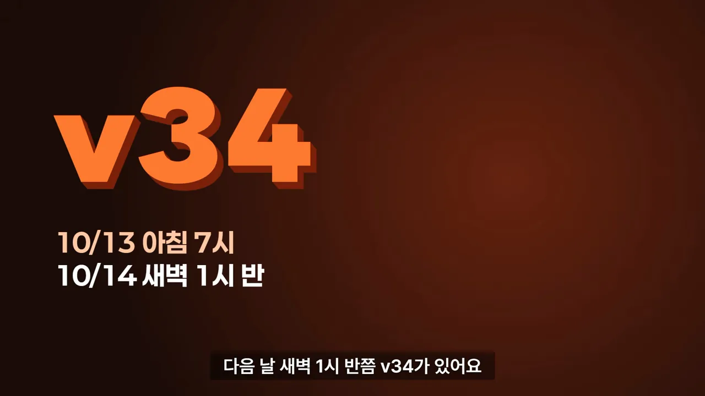
19시간 동안 무엇을 시도하고 거절했는지 순서대로 그리면 아래와 같아요. 빨간 칸이 거절된 방법이고, 초록 칸이 통과한 방법이에요. 마지막 파란 칸은 완성 뒤에 남긴 문서예요.
처음엔 몸이 문제였어요. 아래 두 장을 보면 v07은 몸 높이 425, v08은 330이에요. 몸을 줄이고, 근육을 줄이고, 또 줄였어요. 그다음엔 프레임마다 얼굴이 달라져서 얼굴을 고정했어요.
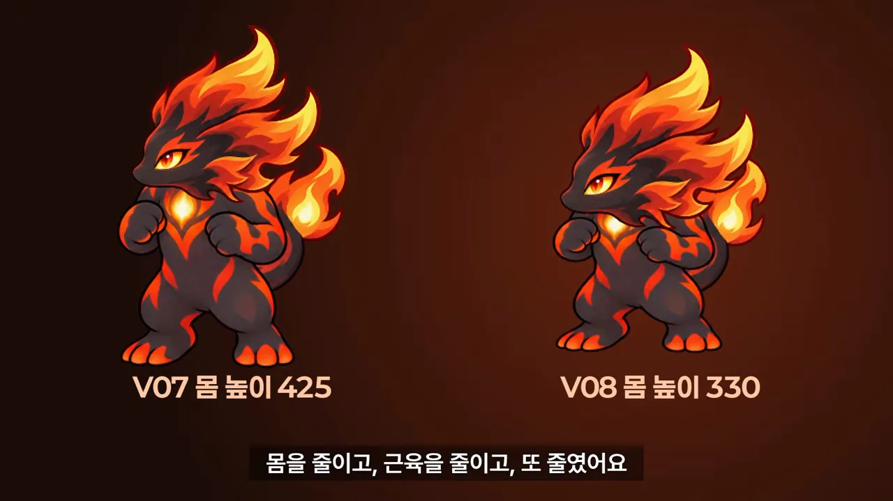
이제 주먹이에요. 팔만 잡아 늘리는 건 거절, 중간 그림을 합성하는 것(v14)도 거절이었어요. v18에서는 팔을 잘라 따로 움직였는데, 화면 글자처럼 '가슴·어깨 합성 티'가 나서 불합격이었어요.
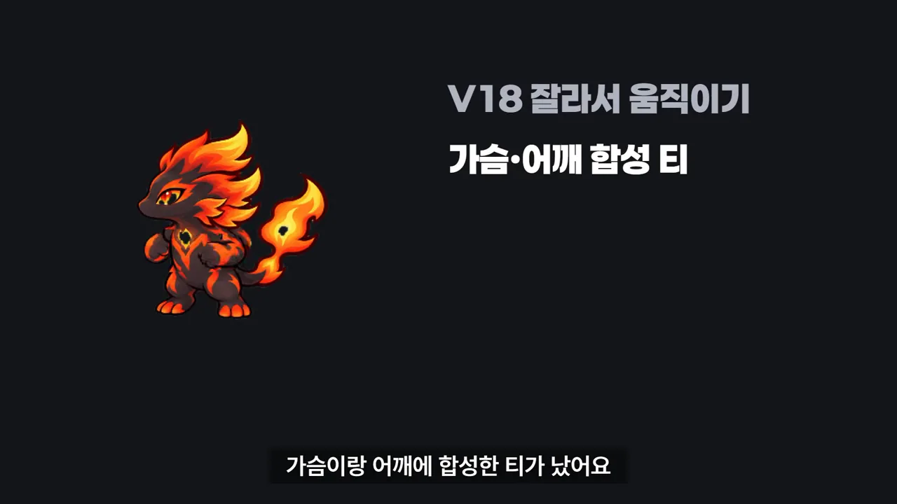
결국 답은 '제일 무식한 방법'이었어요. 연결된 전체 그림을 포즈마다 통째로 새로 그리는 거예요. 화면에 플레임의 포즈 여섯 장이 각각 따로 그려져 있어요. 스물일곱 번째 버전에는 화자가 남긴 말 "굿 너무좋아!!!!!"가 있어요.
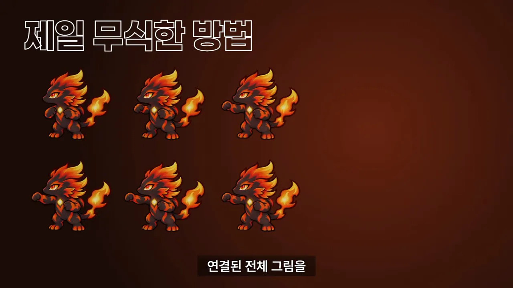
완성보다 중요한 다음 파일
완성본은 새벽 1시 39분이에요. 그런데 화자가 가장 중요하다고 꼽는 건 그로부터 한 시간쯤 뒤에 생긴 문서예요. 화면 왼쪽 위 경로 docs/제작/플레임, 10월 14일에 그날 무엇을 거절했는지, 왜 거절했는지를 적었어요. '따로 붙이기 금지, 늘리기 금지' 같은 내용이에요.
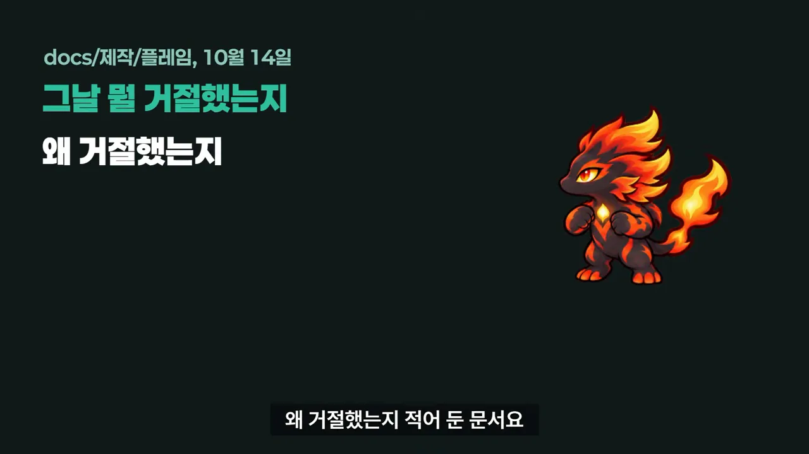
그림체는 문서로, 모양은 캐릭터마다
캐릭터가 늘자 문제가 하나 더 나왔어요. 그림체예요. 한 장씩 보면 좋은데 게임에 같이 놓으면 다른 게임에서 데려온 것 같아요. 그래서 말레아라는 캐릭터를 만들 때는 참고 그림 두 장에 역할을 나눠 줬어요. 화면에 보이는 style-correction-prompt.txt의 영어 문장이 실제로 쓴 지시예요.
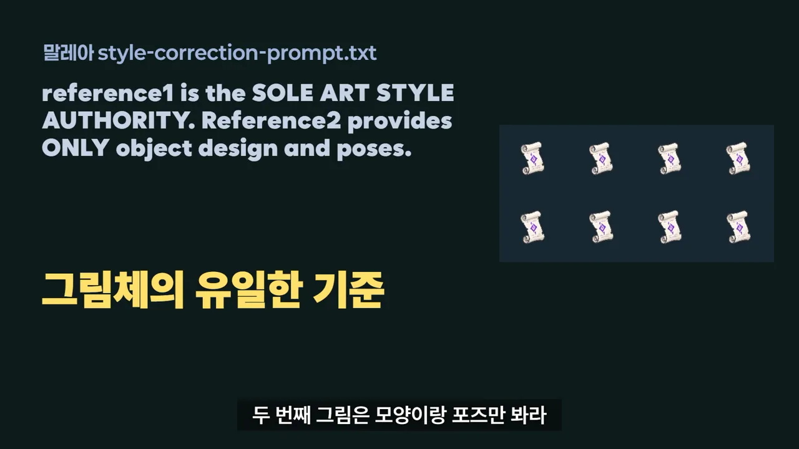
거절하면서 쌓인 규칙
10월 16일 파일부터 규칙이 쌓이기 시작해요. 화면 왼쪽 위 경로가 docs/제작/캐릭터로 바뀌었고, 첫 규칙이 '인간형은 약 2등신'이에요.
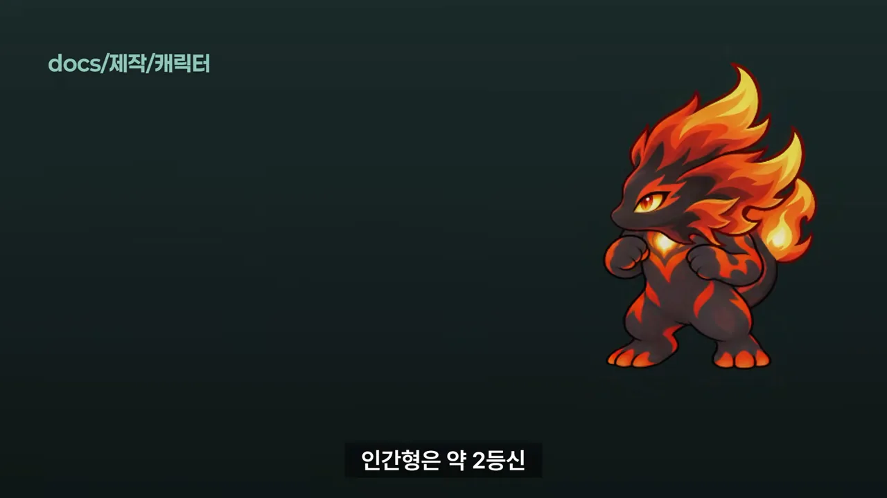
영상이 읽어 준 규칙을 모으면 이래요.
| 대상 | 규칙 | 영상에서 든 이유 |
|---|---|---|
| 비율 | 인간형은 약 2등신 | — |
| 방향 | 스피릿은 왼쪽을 본다 | — |
| 몸 | 탄탄하되 근육은 보디빌더처럼 하지 않는다 | — (플레임 때도 몸과 근육을 계속 줄였어요) |
| 눈 | 적당히 날카롭게, 지나치게 가늘고 화난 눈은 피한다 | 화나게만 하면 다 비슷해져서 |
| 색 (10월 30일) | 같은 색이 아니라 밝기와 선명함의 톤을 맞춘다 | 같은 컬러감을 내려고 |
화자는 이 규칙들이 그림을 잘 알아서 쓴 게 아니라고 강조해요. 전부 거절하면서 쌓인 말이에요.
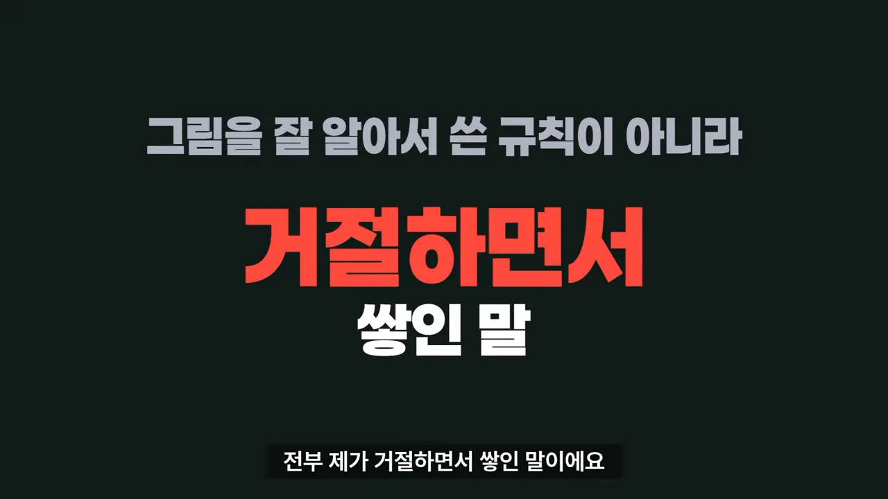
색 규칙은 화면으로 보면 바로 이해돼요. 파랑 물방울, 연두 새싹, 주황 불꽃, 보라 정령은 색이 전부 다르지만, 밝기와 채도가 비슷해서 한 게임에 있는 것처럼 보여요.
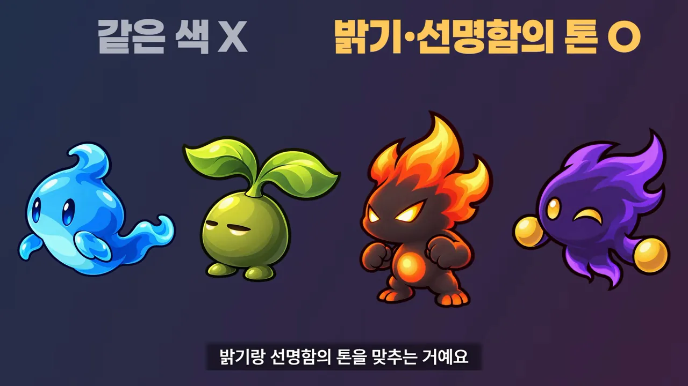
보스 카두스: 고칠수록 좁아지는 지시
같은 기간에 보스들을 만들었고, 파일 날짜는 10월 15일에 몰려 있어요. 그중 카두스는 v01에서 붉은 악마였어요. 아래 왼쪽이 v01, 오른쪽이 v16이에요. 마음에 들 때까지 바꾸다 보니 아예 다른 캐릭터가 됐어요.
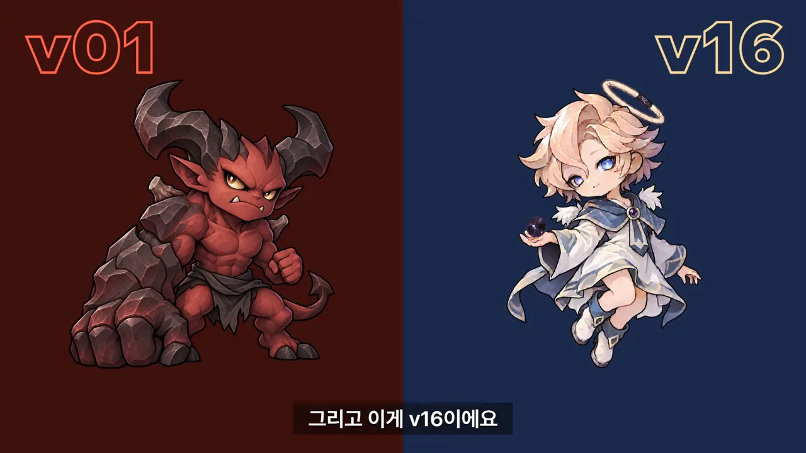
그러다 설정이 붙었어요. 차분하고 상냥한 말투로 죽음을 구원이라 믿는 악역이고, 대사는 "죽음은 축복이에요"예요. 그래서 얼굴은 순한데 손 위에 검은 구슬을 들고 있어요. 뒤로 갈수록 고치는 곳이 좁아져요. 화면의 Change ONLY the halo는 '후광만 고쳐라, 나머지는 건드리지 마라'라는 지시예요. 마지막 v16은 손 위의 구슬을 20% 줄인 게 전부예요.
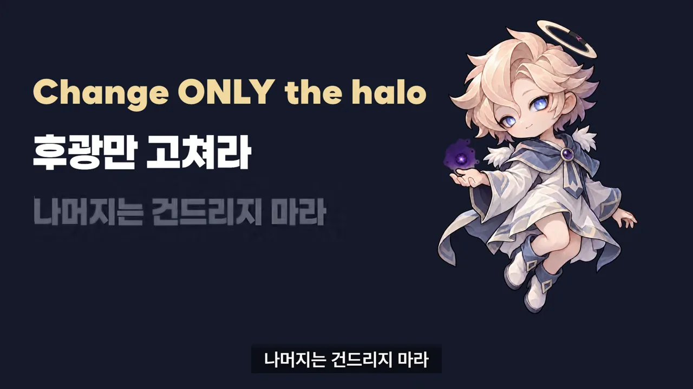
까맣게 칠해 보기
보스들은 첫 그림들과 뭐가 달라졌을까요. 인형, 베틀, 입 벌린 상자, 해파리, 가오리 같은 보스를 까맣게 칠해 봐도 누군지 다 구별돼요. 실루엣이 서로 달라서예요.
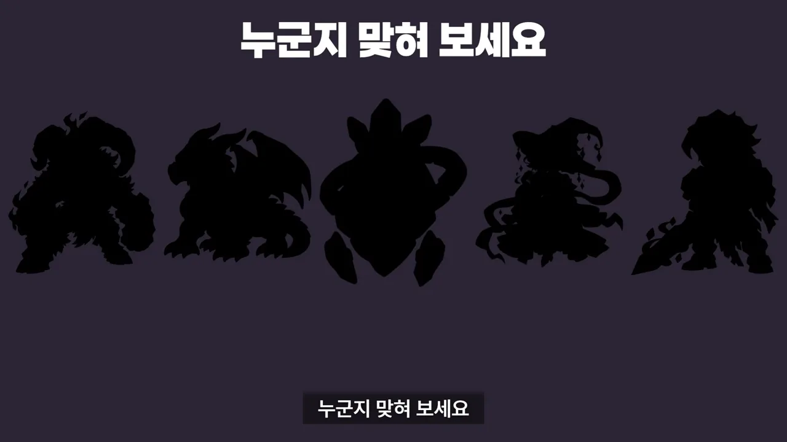
반면 처음 뽑았던 토끼, 새, 여우, 사슴 같은 캐릭터를 같은 방식으로 칠하면, 둥근 덩어리 여러 개가 남을 뿐이에요.
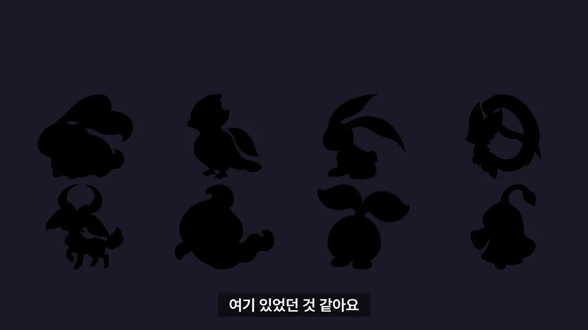
그래서 나온 원칙이 이거예요. 그림체는 문서로 묶고, 모양은 캐릭터마다 다르게 가요.
베스파: '간지'를 네 가지로 쪼개기
화자가 가장 멋지다고 꼽는 보스는 베스파예요. 기준 자체는 단순해요. '멋지게 잘 뽑혔는가, 간지가 나는가'예요. 그런데 이걸 AI에게 그대로 말하면 아무 일도 안 일어나요. 그래서 베스파가 왜 멋진지 네 가지로 뜯어봤어요.
첫째, 실루엣
까맣게 칠해도 나방 날개를 편 여왕인 게 보여요. 아래 화면에서 속 그림은 다 사라졌지만, 양옆으로 펼친 날개와 머리 위 깃은 그대로 읽혀요.
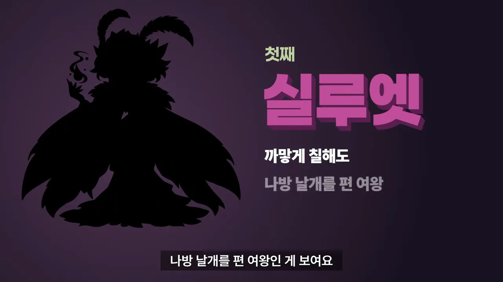
실루엣이 중요한 이유는 실제 게임 화면에 있어요. 왼쪽 휴대폰 화면 위쪽에 보스가 아주 작게 서 있어요. 전투 칸에선 캐릭터가 이만큼 작아지고, 이때 남는 건 윤곽뿐이에요.
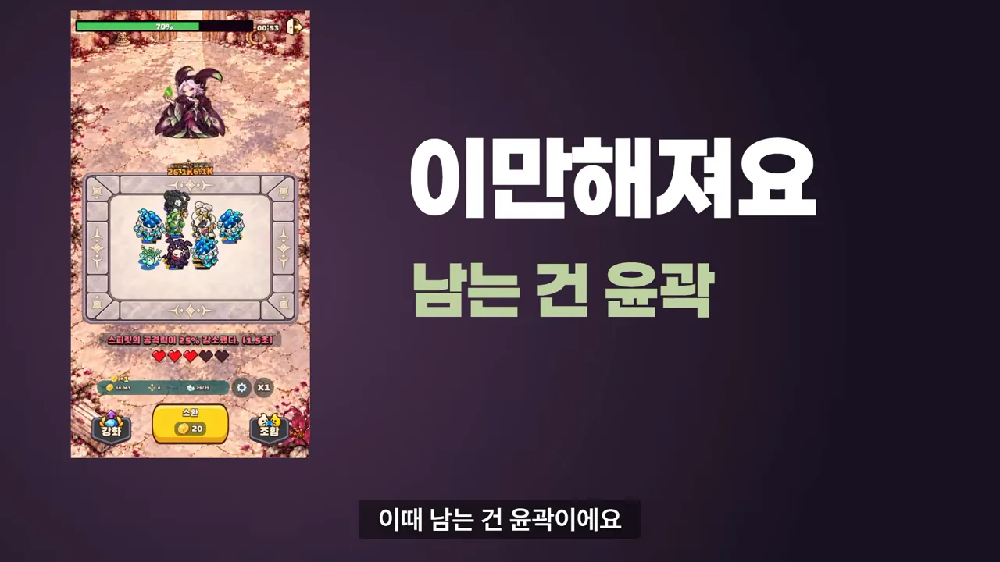
둘째 눈, 셋째 색, 넷째 소재
둘째는 눈이에요. 베스파는 내려다보는 눈 하나로 성격이 나와요.
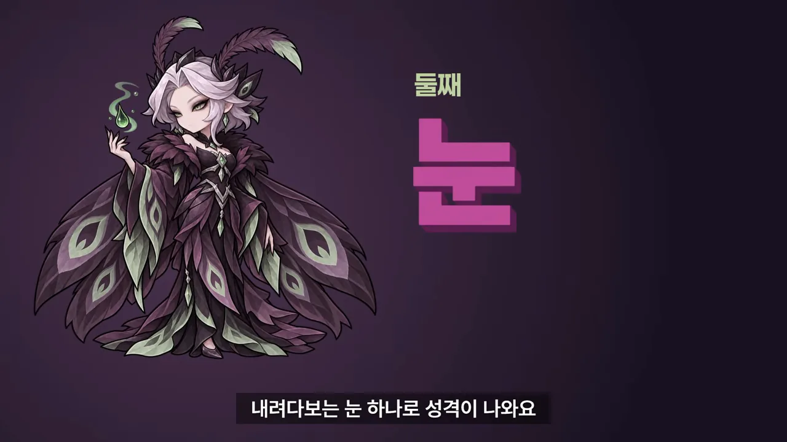
셋째는 색이에요. 배경을 왼쪽 자주, 오른쪽 연두로 나눠 베스파의 두 색을 보여 줘요. 예쁜 색이라기보다 독이 든 색이에요.
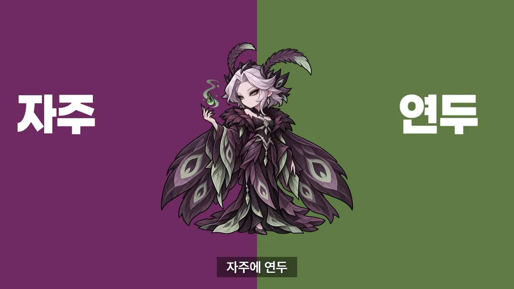
넷째는 소재예요. 드레스가 그냥 옷이 아니라 날개 무늬이고, 머리엔 더듬이 같은 깃이 있어요. 옷 자체가 나방이라는 정체를 드러내요.
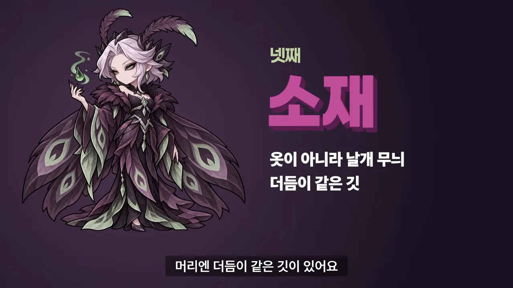
정리하면, 막연한 '간지'가 AI에게 넘길 수 있는 네 가지 지시로 바뀐 거예요.
원화 한 장에서 동작 프레임까지
이 원화 한 장을 기준으로 동작 프레임을 뽑았어요. 화면 왼쪽 표에 동작별 장수가 적혀 있어요. 날개가 찢기는 동작도 16장이에요. 장마다 보여 주는 시간도 달라서, 어떤 장은 0.7초, 어떤 장은 0.1초예요.
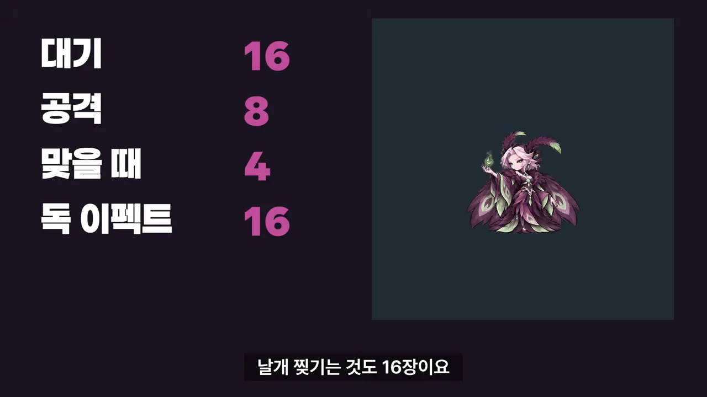
| 동작 | 장수 |
|---|---|
| 대기 | 16장 |
| 공격 | 8장 |
| 맞을 때 | 4장 |
| 독 이펙트 | 16장 |
| 날개 찢기기 | 16장 |
눈까지 적었어요. 준비할 땐 집중한 눈, 독을 뿜을 땐 오만한 눈이에요. 플레임은 그렇게 오래 걸렸는데 베스파는 비교적 수월했어요. 규칙이 이미 있었기 때문이에요. 아래는 베스파가 실제 게임에 들어간 모습이에요.
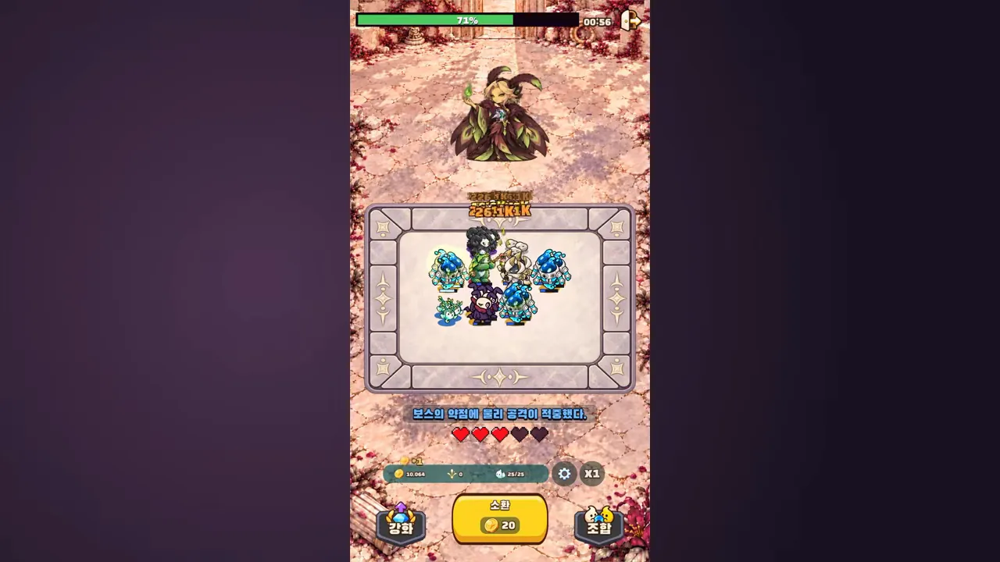
엘리오: 말 32번으로 원화부터 움직임까지
베스파 이후 3주쯤 지나서 만든 엘리오는 AI와 나눈 대화가 전부 남아 있어요. 그래서 화자는 이 과정을 처음부터 그대로 보여 줘요. 첫 말은 그동안 쌓은 규칙을 먼저 하나로 묶자는 거였어요.
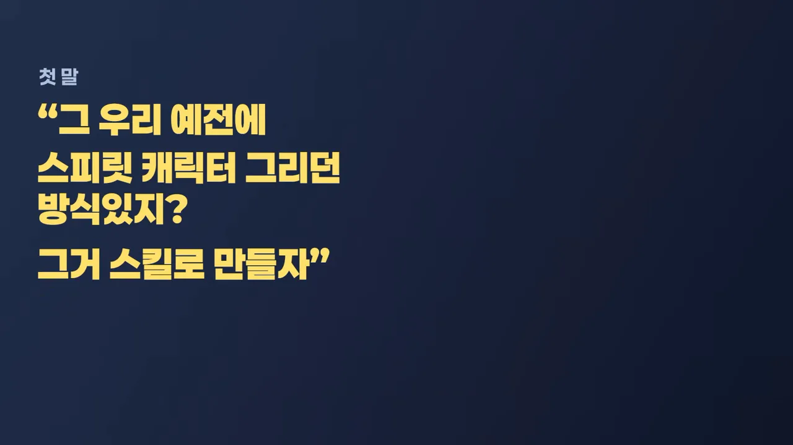
원화를 정하는 데 1시간 50분, 화자가 보낸 말은 32번이었어요. 화자는 그림 용어를 몰라서, 막히면 AI에게 먼저 물어보라고 시켜요. AI가 보기를 주면 고르기만 해요. 이날도 두 번은 말 대신 골라서 답했어요.
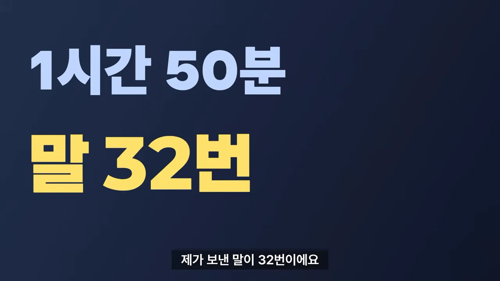
말 32번으로 원화 정하기
첫 그림은 옷이 영 아니었어요. 화자는 "그 옷다른스타일로 입히셈", "구려 목 부분은 안 답답하게"라고 그냥 구리다고 말했어요. 아래 화면은 그다음 요청 "가슴털쪽은 좀 깔끔하게 표현되나"에 맞춰 나온 그림이에요. 이번엔 옷이 너무 많아져서 "표현은 좋은데 좀 과해"라는 말이 이어졌어요.
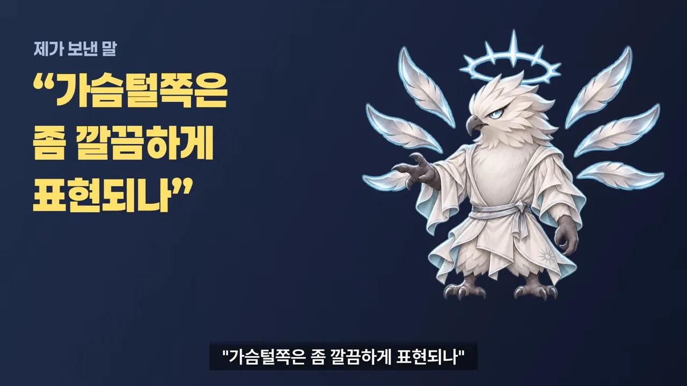
참고 그림을 줄 때는 꼭 쓰임새를 적어요. 화면의 ONLY a COLOR, FABRIC AND LIGHT reference는 '이 그림은 색이랑 소재, 빛만 참고해라. 얼굴, 머리, 옷 구조는 베끼지 마라'라는 뜻이에요. 말레아 때 그림체와 모양을 나눠 준 것과 같은 방식이에요.
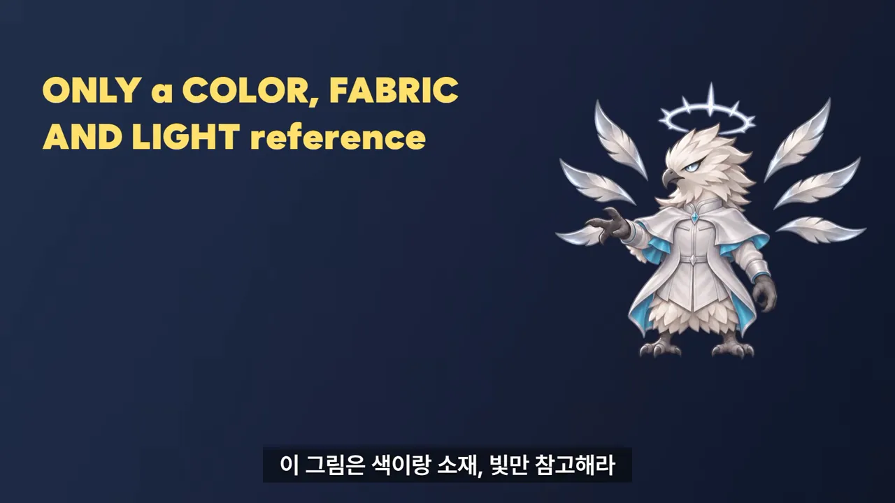
화자가 거절한 것도 지시에 그대로 들어가요. 화면의 The user REJECTED 문장은 '사용자가 이 옷을 가져오는 걸 거절했다'는 내용이에요. 같은 실수를 다시 하지 않게 거절 이력을 AI에게도 알려 주는 거예요.
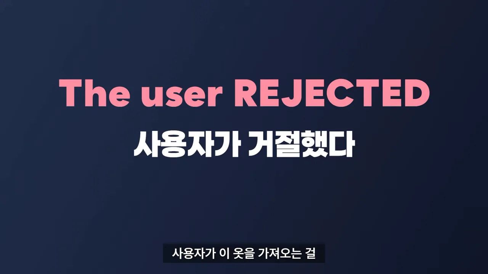
줄여 달랬더니 이번엔 너무 줄었어요. 화자의 말은 "아니.. ㅋㅋㅋ 이건 너무 심플해요 형 적당히를 모르냐중간!"이었어요. 재미있는 건 AI가 이 말을 그림 도구에 넘길 때 바꾸는 방식이에요. 아래 화면 왼쪽이 너무 심플한 첫 번째, 오른쪽이 너무 복잡한 두 번째예요.
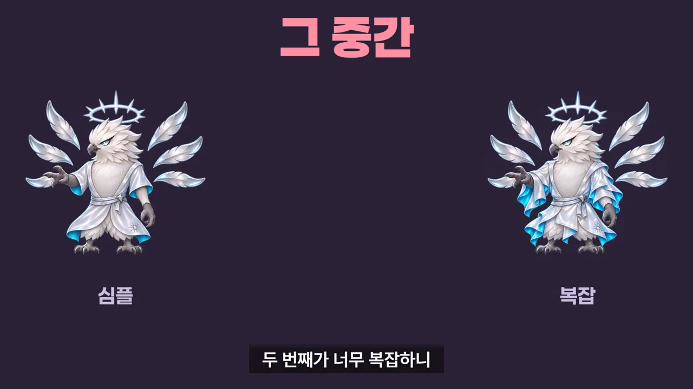
| 화자가 한 말 | AI가 그림 도구에 넘긴 말 |
|---|---|
| "형 적당히를 모르냐중간!" | 첫 번째 그림은 너무 심플하고 두 번째는 너무 복잡하니 그 중간을 그려라 |
| (참고 그림을 줄 때) | 이 그림은 색, 소재, 빛만 참고해라. 얼굴, 머리, 옷 구조는 베끼지 마라 |
| (거절한 옷) | 사용자가 이 옷을 가져오는 걸 거절했다 |
"오 딱 좋은데"까지 왔지만, 혼자 볼 때 멋있어도 게임 카드에 넣으면 달라요. 화자는 "카드로 보여줘", "다른애들이랑 비교해서!"라고 했어요. 오른쪽 위 줄이 엘리오 카드 원본과 A, B, C안이고, 아래 줄이 다른 캐릭터 카드예요. 날개 때문에 몸이 작아진 게 비교하니 보였어요.
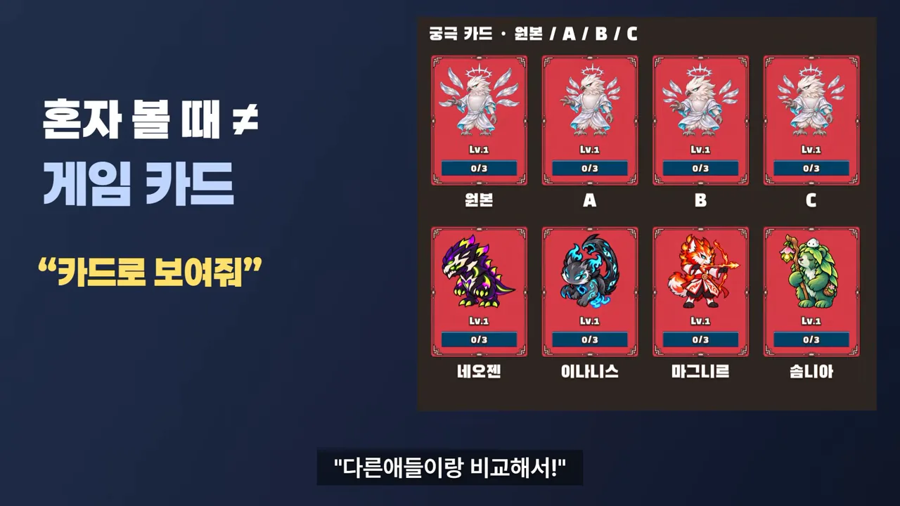
화자의 말만 보면 진짜 대충이에요. 그런데 화면에 모은 단어를 보면 하나하나가 기준이에요. 과하다, 심플하다, 비교해서, 카드에 넣어서.
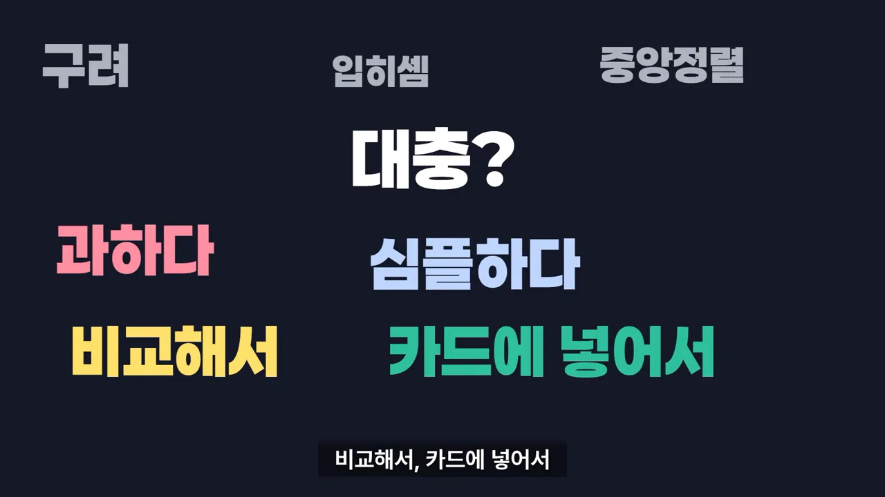
움직이자 또 나온 문제들
원화는 시작일 뿐이에요. 움직이는 순간 또 문제가 나와요. 궁극기는 칼날 여섯 개가 각자 날아다녔어요. 화자가 보낸 말은 "궁극기의 칼갈 이펙트가 너무 난해함"이었고, 오타까지 그대로예요.
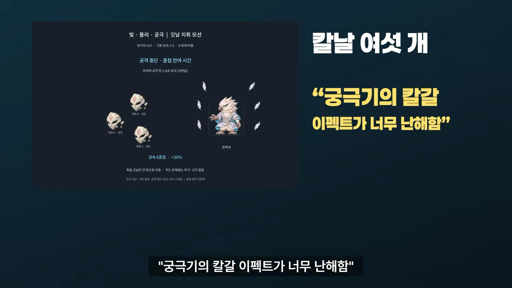
그래서 "약간 그 새 비행하듯 모여서 한번에 쏘는 느낌 어때 정렬돼서"라고 말했어요. 결과 화면 제목이 '궁극기 · 모여서 정렬 → 한 번에 발사'로 바뀌었어요. 독수리 캐릭터라 새 떼처럼 모여서 쏘는 연출이 나왔어요.
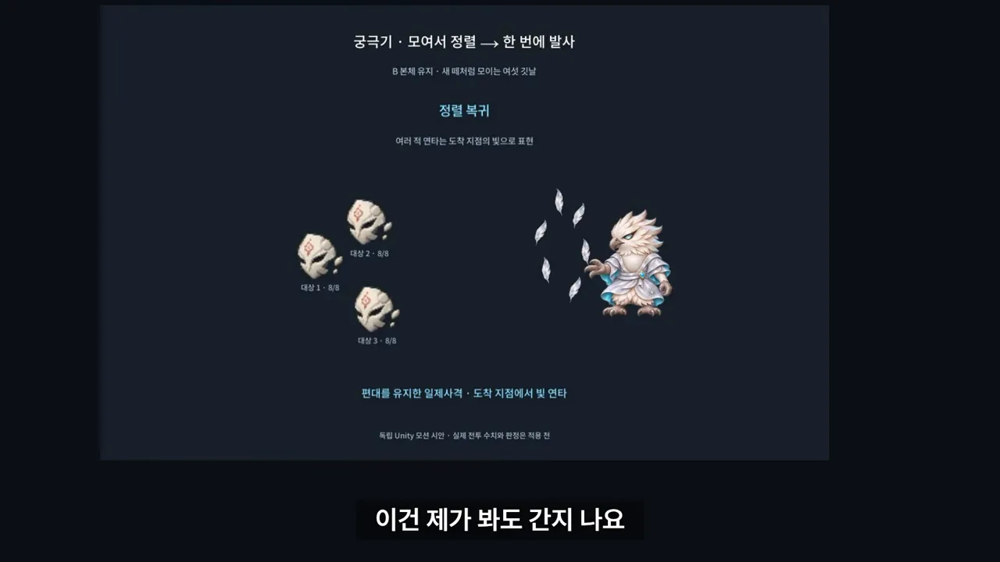
다음은 그림이에요. 엘리오를 다른 캐릭터 옆에 두니 혼자 붕 떠 보였어요. 오른쪽 마그니르 카드처럼 다른 캐릭터에는 어두운 외곽선이 있는데 엘리오만 없어서예요.
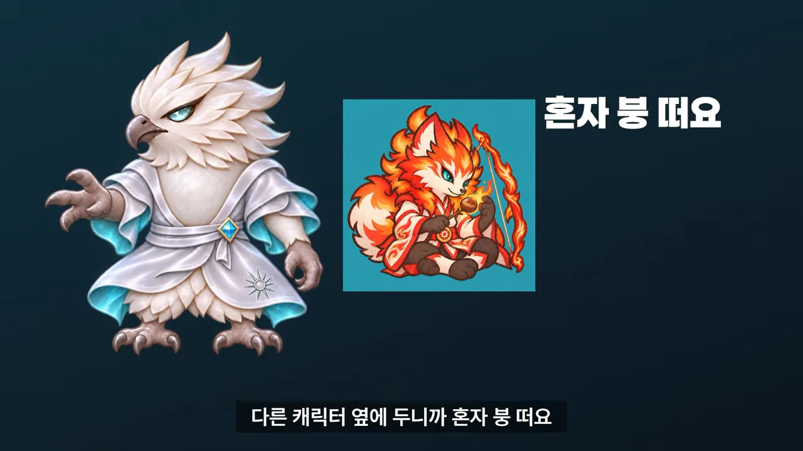
원화에 어두운 외곽선을 넣으면서 화자는 "전후 비교되게 ㄱㄱ"를 시켰어요. 화면 왼쪽이 적용 전, 오른쪽이 적용 후예요. 화자는 이걸 항상 시킨다고 해요. 나란히 안 보면 좋아졌는지 모르니까요.
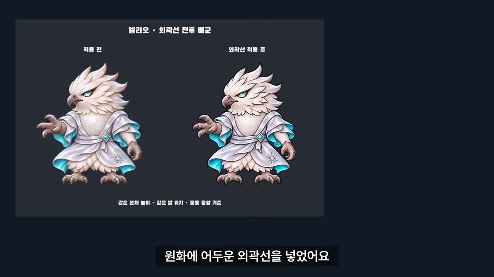
평타는 더 오래 걸렸어요. 손만 까딱거려서 "몸이나 뭐 그런것까지" 움직이게 했어요. 깃털이 나오는 자리도 어색했어요. 아래 전투 미리보기를 보며 "손 끝에서 나오기보단 ? 그냥 중앙? 쯤에 서 나가는 느낌 ?"이라고 했어요. 전문 용어는 하나도 없어요.
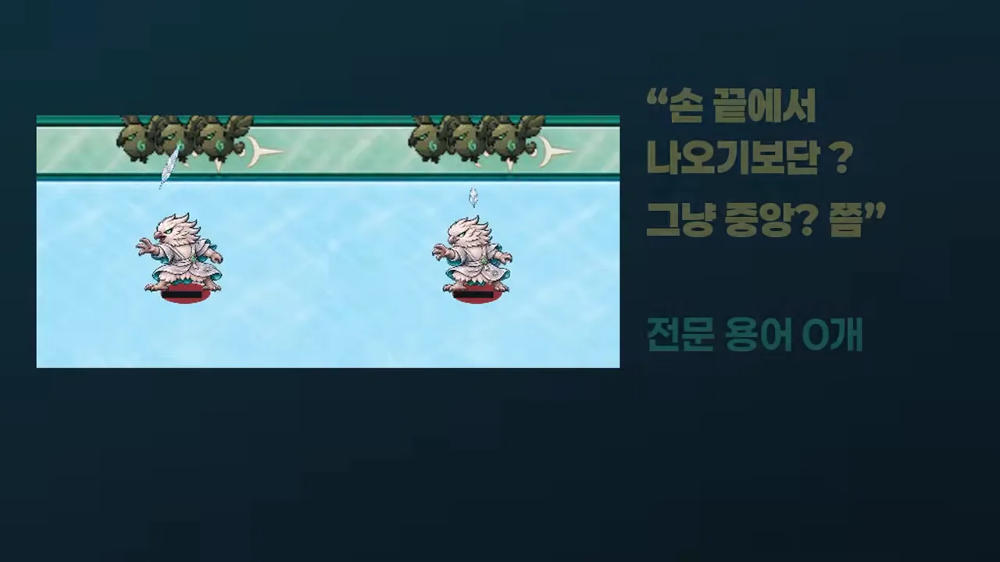
가장 중요한 한마디
화자가 가장 중요하다고 꼽는 말이에요. 투사체 크기에 관한 규칙이 이미 있으니, 그 규칙에 맞춰 원화를 다시 그리라는 거예요.
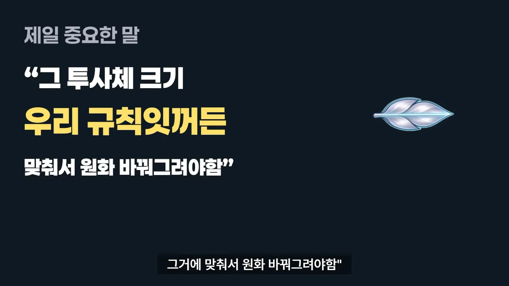
플레임 때는 19시간 동안 거절만 했는데, 이제는 이 한마디면 돼요. 둘 사이에 무엇이 쌓였는지 그리면 이래요.
시안 열 개, 그리고 바뀐 것
규칙을 스킬로 묶고 나서, 화자는 새 캐릭터 시안을 한 번에 열 개 뽑아 봤어요(화면 제목 날짜는 11월 6일). 이번엔 귀여운 동물이 아니라 소재를 먼저 정하고, 그 소재가 몸이 되게 했어요. 아래 열 개에 소재 이름이 붙어 있어요. 먹으로 된 몸, 현악기 구조가 몸통인 정령, 접힌 종이로 된 머리 같은 식이에요.
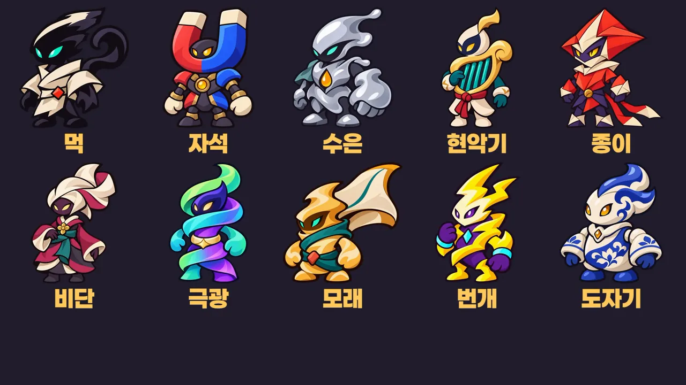
이걸 까맣게 칠해 보면 차이가 확실해요. 맨 윗줄이 처음 토끼와 여우 때 실루엣이고, 아래 두 줄이 새 시안이에요. 처음엔 다 동글동글했는데, 새 시안은 하나하나 윤곽이 달라요.
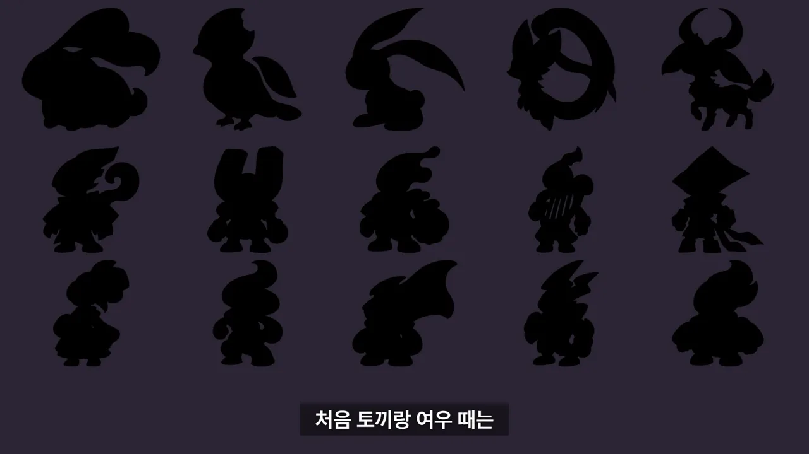
바뀐 건 그림 실력이 아니에요
처음 그림과 지금 그림을 놓고 보면, 화자의 그림 실력은 그대로예요. 지금도 못 그려요. 바뀐 건 쌓인 문서예요. 게임 그림 폴더에는 PNG(Portable Network Graphics) 파일이 움직임 프레임까지 합쳐 1만 1천 장이 넘어요.
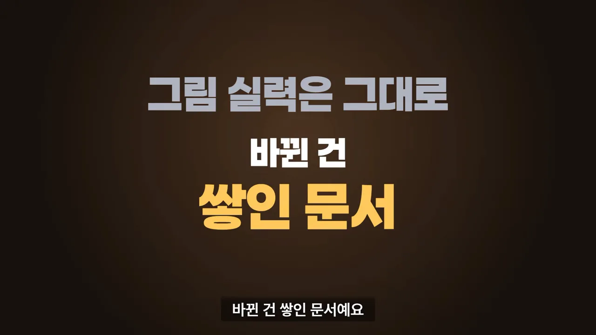
다 비슷하게 나왔던 건 AI 때문만은 아니었어요. 무엇이 좋은지 화자가 말을 못 했기 때문이에요. 그래서 화자는 자기 일을 세 가지로 정리해요.
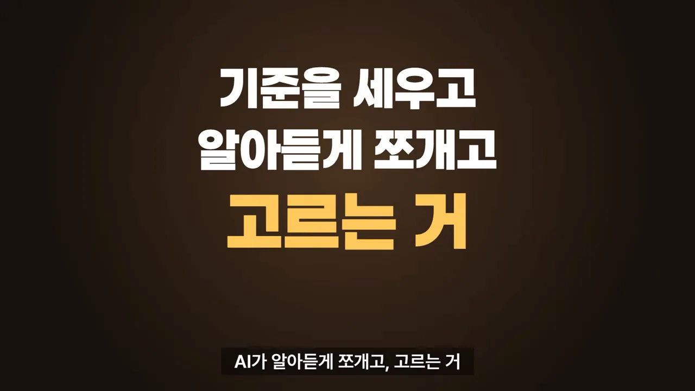
그럼 고르는 눈은 어떻게 생겼을까요. 화자의 답은 많이 뽑고, 게임에 넣어 보고, 구리다고 말하면서였어요. 다음 캐릭터도 이 거절 기록에서 시작해요.